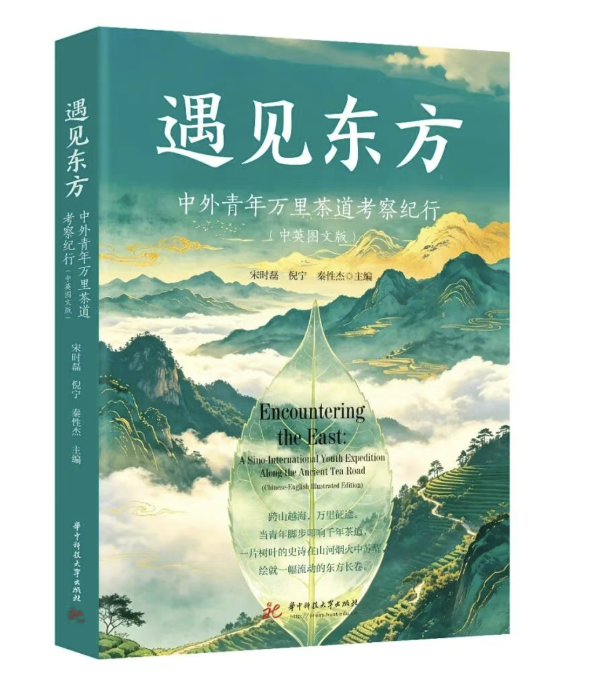

center / enfp
蓝蓝，22 岁
WHU 中文系 → NJU 现当代文学。养成系内容创作者，也是把文学、旅行与 AI 产品放在同一张桌上的人。
ENFP啦啦蓝1 Person + AI
WHU 中文系 → NJU 现当代文学。养成系内容创作者，也是把文学、旅行与 AI 产品放在同一张桌上的人。
认真记录、热烈出发、允许变化。每个项目都应该让生活更具体一点。
校园、旅行、vlog 与成长记录。内容阅读量 100w+，把“养成系”当作长期而诚实的表达方式。
新文学小说中的女性想象及他者化困境（1919-1933）。从爱情神话、摹仿欲望与现代主体进入文本。
Auerbach 的现实再现，Girard 的三角欲望，以及“谁在替谁想象”这一持续追问。
微信读书 231 本读完、102 本在读、3887 条笔记；从小说走向诗歌，再进入理论与思想史。
欲望如何借他人之眼发生？现代女性何时成为主体，何时又被写成寓言？文学如何保存矛盾而不急于裁决？

语音、Live2D、仿生头与灵巧手连在一起。比心、双人写字和烟花都是可以参与的回应。2026 数字经济大会首发。
打开产品案例 →
北京四日工作台把天气、闭馆日、预约、预算、出片和 Todo 收进同一套可执行页面。
查看真实成果 →
京都故事地图把路线、机位和叙事放在同一张可以打开的地图上。
打开故事地图 →391 份有效问卷、6 个平台样本，整理出 12 门代表课程和 30 份评价，把供给端做成可比较的产品结构。

参与编辑、采访与写作，文章《茶路贯古今，“新火”试“新茶”》从宜昌茶路现场观察传统如何更新。
所谓“新火”不是对旧手艺的否定；所谓“新茶”也不是对传统的背离。
继续做旅行工具，继续读理论，也继续把真实生活写成可以回看的坐标。